每个被开采的房间都有一个内置的计数器，终值大约为100,000单位的能量（再加上一些随机因素）。当计数器达到终值，在房间的任意一个出入口会生产一个系统控制的 creep，其目标是猎杀你的 creep。它大部分时间不会理睬你的建筑物，一旦某个建筑物挡了它的道，它就会试图摧毁该建筑物。这些 creep 可以使用攻击(attack), 远程攻击(rangedAttack), 和 拆毁(dismantle)，但是不会跨房间游走。
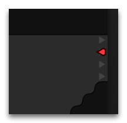
这些 creep 最重要的特点是只会出现在通向中立房间的出口，如果出口通向的房间被你（或者其他人）控制，或者是一个被预定的房间，creep 入侵者将不会出现在该的出口。如果该房间的所有的出口都是这种类型，那么就不会产生任何入侵者
目前，NPC 入侵者的攻击不会产生任何邮件提醒，因为即便在一个普通的开采房间中，一天内也会有若干次入侵。
袭击
有 10% 几率你会遇到不止一个入侵者，你将遇到 2 至 5 个结伴的入侵者。每个入侵者都会有各自的角色：近战，远程或者治疗者。远程攻击者和近战攻击者的行为完全不同：他们会试图和你的creep保持距离。治疗者的作用是治疗其他入侵成员。同样的某些 creep 会受到  ,
,  ,
,  ,
,  或
或  的强化。
的强化。
creep入侵者类型
有两种 creep 入侵者类型：
- 轻型 creep，出现在中立、被预定和房间控制等级3以内的房间里。
- 重型 creep，出现在房间控制等级4级及以上的房间里。
| RCL < 4 | RCL ≥ 4 | |
| Melee | 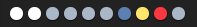 | 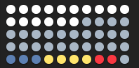 |
| Ranged | 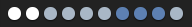 | 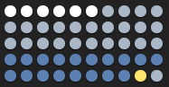 |
| Healer | 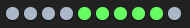 | 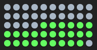 |
测试
你可使用在右侧面板上的 “Invasion”（入侵）控制器手动生成NPC入侵者，用来测试你的防御系统。
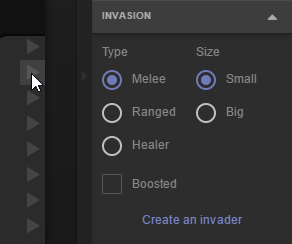
要塞 (Stronghold)
如果入侵者开始袭击您的房间，请检查您的区域地图 — 他们的基地就在区块内的某个房间内。该 NPC 要塞可以被攻击和摧毁，一旦被摧毁，区块内的所有房间将不再刷新入侵者，直到下一个要塞出现为止。
每个 NPC 要塞的建筑上都有 EFFECT_COLLAPSE_TIMER 效果。当前一个要塞崩溃后，下一个会立刻出现在区块的某个房间内。
如果您摧毁了要塞，它的废墟 (ruins) 将会保留同样的效果计时器，从而让您在这段时间内免受 NPC 的进攻。
要塞的类型有很多种，每种类型都有不同的建筑布局和防御 AI。您可以通过检查 StructureInvaderCore 上的 level 属性来估计该要塞的进攻难度。
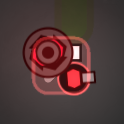 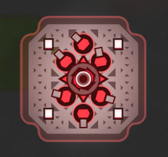
我们还有另一个理由来征服一个 NPC 要塞 — 他的仓库中存放着很多宝贵的资源。
每一个要塞都有数个 container。并且在你摧毁核心建筑 (StructureInvaderCore) 之后，它的废墟也会包含大量的资源。
以下是一个 5 级要塞战利品的例子：
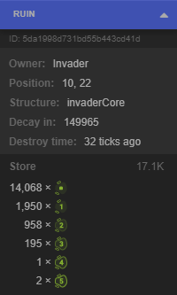 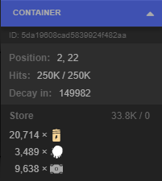 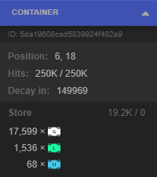 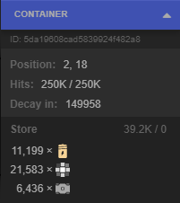 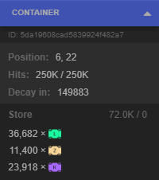
一个正常的 NPC 要塞不仅会在区块中生成入侵者，并且每隔几千 ticks 还会在临近的中立（甚至是预定）房间内生成较小的要塞核心。 这种核心不会包含任何建筑或者 creep。但是他会预定 (reserve) 房间的控制器，在摧毁它之前，您将无法从该房间采集能量。
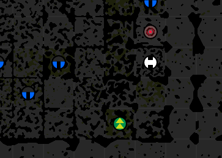